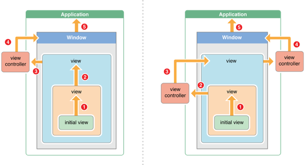

- 触摸事件
- 加速计事件
- 远程控制事件
简介
响应者对象 UIResponder
其继承体系下才能接受并处理事件。
主要包括
- UIApplication
- UIViewController
UIView
原因：
UIResponder提供了触摸事件的相应处理方法func touchesBegan(_ touches: Set<UITouch>, with event: UIEvent?) func touchesMoved(_ touches: Set<UITouch>, with event: UIEvent?) func touchesEnded(_ touches: Set<UITouch>, with event: UIEvent?) func touchesCancelled(_ touches: Set<UITouch>, with event: UIEvent?)
事件的处理
对于UIResponder的子类UIView而言
//一根或多根手指开始触摸view，系统自动调用下面方法
func touchesBegan(_ touches: Set<UITouch>, with event: UIEvent?)
//一根或多跟手指在view上移动，系统会自动调用view的下面方法（随着手指的移动会持续调用）
func touchesMoved(_ touches: Set<UITouch>, with event: UIEvent?)
//一根或多根手指离开view，系统会调用view的下面方法
func touchesEnded(_ touches: Set<UITouch>, with event: UIEvent?)
//触摸结束前，某个系统事件（比如电话）会打断触摸过程，系统自动调用下面方法。
func touchesCancelled(_ touches: Set<UITouch>, with event: UIEvent?)
注意：上面的方法是系统自动调用的。所以可以通过重写方法来处理一些事件。
如果两个手指同时触摸一个view，只会调用一次touchesBegan方法，touches参数中有2个
后台机制UITouch的对象
如果这两个手指一前一后分别触摸同一个view，那么这个view会分别调用两次touchesBegan方法，每次touches参数只包含一个UITouch对象。
如果是处理UIView的子类触摸事件，必须要继承UIView，然后在子类中重写上面四个方法。
如果是处理UIViewController，那么直接在控制器的.m文件中进行重写。
UIView的拖拽
重写func touchesMoved(_ touches: Set<UITouch>, with event: UIEvent?)方法。
下面简单介绍一下UITouch的属性和方法。
NS_CLASS_AVAILABLE_IOS(2_0) @interface UITouch : NSObject
@property(nonatomic,readonly) NSTimeInterval timestamp;
@property(nonatomic,readonly) UITouchPhase phase;
@property(nonatomic,readonly) NSUInteger tapCount; // touch down within a certain point within a certain amount of time
// majorRadius and majorRadiusTolerance are in points
// The majorRadius will be accurate +/- the majorRadiusTolerance
@property(nonatomic,readonly) CGFloat majorRadius NS_AVAILABLE_IOS(8_0);
@property(nonatomic,readonly) CGFloat majorRadiusTolerance NS_AVAILABLE_IOS(8_0);
@property(nullable,nonatomic,readonly,strong) UIWindow *window;
@property(nullable,nonatomic,readonly,strong) UIView *view;
@property(nullable,nonatomic,readonly,copy) NSArray <UIGestureRecognizer *> *gestureRecognizers NS_AVAILABLE_IOS(3_2);
- (CGPoint)locationInView:(nullable UIView *)view;
- (CGPoint)previousLocationInView:(nullable UIView *)view;
// Force of the touch, where 1.0 represents the force of an average touch
@property(nonatomic,readonly) CGFloat force NS_AVAILABLE_IOS(9_0);
// Maximum possible force with this input mechanism
@property(nonatomic,readonly) CGFloat maximumPossibleForce NS_AVAILABLE_IOS(9_0);
示例
- 当用户的一根手指接触屏幕时，会出现一个与手指相关的的UITouch对象。
- 一根手指对应一个UITouch对象
- 如果两个手指同时触摸屏幕，只会触发一次
func touchesBegan(_ touches: Set<UITouch>, with event: UIEvent?),参数touches存放两个UITouch对象 - 如果一前一后触摸屏幕，则会触发两次
func touchesBegan(_ touches: Set<UITouch>, with event: UIEvent?)方法，每次调用的参数只会包含一个UITouch对象。
UITouch的作用
- 保存与手指相关的信息，比如触摸的时间、位置、阶段等等
- 当同一个手指移动时，系统会同步更新对应的UITouch，使之能够一直保存该手指在触摸的位置
- 当手指离开屏幕时，会销毁相应的UITouch
UITouch关键属性
//触摸产生时所处的窗口
@property(nonatomic,readonly,retain) UIWindow *window;
//触摸产生时所处的视图
@property(nonatomic,readonly,retain) UIView *view;
//短时间内点按屏幕的次数，可以根据tapCount判断单击、双击或更多的点击
@property(nonatomic,readonly) NSUInteger tapCount;
//记录了触摸事件产生或变化时的时间，单位是秒@property(nonatomic,readonly) NSTimeInterval timestamp;
//当前触摸事件所处的状态 TODO:看一下具体的类型是什么
@property(nonatomic,readonly) UITouchPhase phase;
UITouch关键方法
(CGPoint)locationInView:(UIView *)view;
// 返回值表示触摸在view上的位置
// 这里返回的位置是针对view的坐标系的（以view的左上角为原点(0, 0)）
// 调用时传入的view参数为nil的话，返回的是触摸点在UIWindow的位置
(CGPoint)previousLocationInView:(UIView *)view;
// 该方法记录了前一个触摸点的位置
实现：
- (void)touchesMoved:(NSSet *)touches withEvent:(UIEvent *)event{
// 想让控件随着手指移动而移动,监听手指移动
// 获取UITouch对象
UITouch *touch = [touches anyObject];
// 获取当前点的位置
CGPoint curP = [touch locationInView:self];
// 获取上一个点的位置
CGPoint preP = [touch previousLocationInView:self];
// 获取它们x轴的偏移量,每次都是相对上一次
CGFloat offsetX = curP.x - preP.x;
// 获取y轴的偏移量
CGFloat offsetY = curP.y - preP.y;
// 修改控件的形变或者frame,center,就可以控制控件的位置
// 形变也是相对上一次形变(平移)
// CGAffineTransformMakeTranslation:会把之前形变给清空,重新开始设置形变参数
// make:相对于最原始的位置形变
// CGAffineTransform t:相对这个t的形变的基础上再去形变
// 如果相对哪个形变再次形变,就传入它的形变
self.transform = CGAffineTransformTranslate(self.transform, offsetX, offsetY);}
iOS事件的产生与传递
产生
发生触摸事件后，事件存入由application管理的事件队列中（先进先出的原则）
|
application从事件队列中取出最前面的事件，并分发下去处理。通常现发给应用程序的主窗口keywindow
|
主窗口会在视图层次结构中找到一个最合适的视图来处理事件。关键
|
找到合适的控件后，会调用视图控件的touches方法来做具体事件处理。
传递
传递的原则
1. 从父控件传递到子控件
2. UIApplication -> keyWindow -> 寻找最合适的view
注意：如果父控件不能接受消息，那么子控件肯定也不能接收。
寻找合适的视图
1.判断主窗口keywindow是否接收触摸事件
2.判断触摸点是否在自己身上
3.子控件数组中从后向前遍历子控件，重复步骤1，2
4.找到合适的view后把事件传递给该view，然后对其子view继续进行遍历，直到找不到为止。
5.若没有合适的子控件，那么自身控件就是最适合处理事件的控件（View）
UIView不能接受触摸事件的三种情况
不允许交互： userInteractionEnable = NO
隐藏： 如果父控件隐藏，子控件也会隐藏。因而不会接受事件
透明度： 如果设置一个控件的透明度<0.01，会直接影响子控件的透明度。alpha：0.0~0.01为透明。
寻找合适视图的底层剖析
hitTest:withEvent
pointInside
对于第一个方法hitTest:withEvent,
调用时间：事件被分配给view之后
作用：查找并返回合适的view
注 意：不管这个控件能不能处理事件，也不管触摸点在不在这个控件上，事件都会先传递给这个控件，随后再调用hitTest:withEvent:方法
拦截事件的处理
- 正因为hitTest：withEvent：方法可以返回最合适的view，所以可以通过重写hitTest：withEvent：方法，返回指定的view作为最合适的view。
- 不管点击哪里，最合适的view都是hitTest：withEvent：方法中返回的那个view。
- 通过重写hitTest：withEvent：，就可以拦截事件的传递过程，想让谁处理事件谁就处理事件。
//hitTest方法的具体实现
- (UIView *)hitTest:(CGPoint)point withEvent:(UIEvent *)event{
// 1.判断下窗口能否接收事件
if (self.userInteractionEnabled == NO || self.hidden == YES || self.alpha <= 0.01) return nil;
// 2.判断下点在不在窗口上
// 不在窗口上
if ([self pointInside:point withEvent:event] == NO) return nil;
// 3.从后往前遍历子控件数组
int count = (int)self.subviews.count;
for (int i = count - 1; i >= 0; i--) {
// 获取子控件
UIView *childView = self.subviews[i];
// 坐标系的转换,把窗口上的点转换为子控件上的点
// 把自己控件上的点转换成子控件上的点
CGPoint childP = [self convertPoint:point toView:childView];
UIView *fitView = [childView hitTest:childP withEvent:event];
if (fitView) {
// 如果能找到最合适的view
return fitView;
}
}
// 4.没有找到更合适的view，也就是没有比自己更合适的view
return self;
}
需要稍微研究下的方法
[view convertPoint: point toView: view]//将某点坐标从自身坐标系转换为 另外一个view
pointInside:withEvent:方法判断点在不在方法调用者的坐标系上。
事件的响应过程
触摸事件处理的整个过程
1.找到合适的视图控件来处理事件
2.找到合适的的控件后，调用touchbegan touchmove touchEnd来处理具体事件
3.touch方法的默认方法是将事件顺着响应链向上传递，将事件交给上一个响应者进行处理。
响应者链条：在iOS程序中无论是最后面的UIWindow还是最前面的某个按钮，它们的摆放是有前后关系的，一个控件可以放到另一个控件上面或下面，那么用户点击某个控件时是触发上面的控件还是下面的控件呢，这种先后关系构成一个链条就叫“响应者链”

其中左侧为viewController不包含controller嵌套的。
右侧为viewController包含controller符合嵌套的。
响应者对象：能处理事件的对象，也就是继承自UIResponder的对象
作用：能很清楚的看见每个响应者之间的联系，并且可以让一个事件多个对象处理。
判断上一个响应者：
如果当前view是控制器的view，那么上一个响应者就是控制器
如果当前view不是控制器的view，那么上一个控制器就是其父控件
响应者链条的事件传递：
1.如果可以，传递给上一个响应者
2.在视图层次的最顶级视图，如果不能处理事件，则传递给window对象处理
3.window对象不能处理，传递给application处理
4.若UIApplication也不能处理，则丢弃。
事件处理的整个过程
1.屏幕产生触摸事件，加入application的事件队列
2.application取出队列最前端的事件，把事件传递给主窗口keywindow
3.主窗口在层次结构中找到最适合的一个视图View来处理事件
4.最适合的view处理事件（默认会不断向上抛）
#import "WSView.h"
@implementation WSView
//只要点击控件,就会调用touchBegin,如果没有重写这个方法,自己处理不了触摸事件
// 上一个响应者可能是父控件
- (void)touchesBegan:(NSSet *)touches withEvent:(UIEvent *)event{
// 默认会把事件传递给上一个响应者,上一个响应者是父控件,交给父控件处理
[super touchesBegan:touches withEvent:event];
// 注意不是调用父控件的touches方法，而是调用父类的touches方法
// super是父类 superview是父控件
}
@end
注意：事件的响应中，如果某个控件实现了touches...方法，则这个事件将由该控件来接受，如果调用了[supertouches….];就会将事件顺着响应者链条往上传递，传递给上一个响应者；接着就会调用上一个响应者的touches….方法